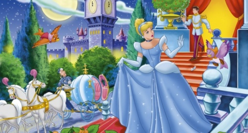

O gece Külkedisi balonun yıldızı olmuş. Baloya katılan hanımlar (özellikle de iki üvey kız kardeşi) onun elbisesini çok beğenmişler ve terzisinin adını öğrenmek için ona yalvarmışlar. Beyefendilerin hepsi onunla dans etmek için birbirleriyle yarışmışlar. Prens ise götür görmez ona aşık olmuş! Ve o andan sonra hiç kimseye bu kızla dans etmek için izin verilmemiş. Saatler saatleri, dakikalar dakikaları kovalamış ve Külkedisi saat tam on ikiyi vuracağı sırada evde olması gerektiğini hatırlamış. “Gitme!” diye seslenmiş Prens arkasından, ama Külkedisi bir an bile durmadan koşup oradan uzaklaşmış. Sokağa çaktığında elbisesi tekrar eski elbiselerine dönüşmüş. Geriye kala kala camdan ayakkabıların bir teki kalmış. Diğer tekini nerede kaybettiğini bilmiyormuş.
